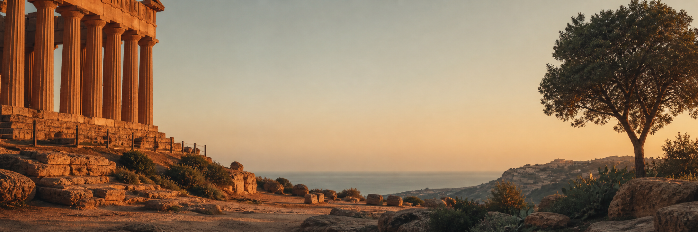
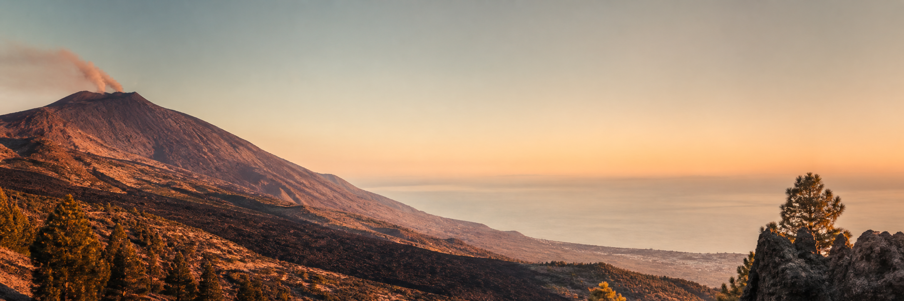
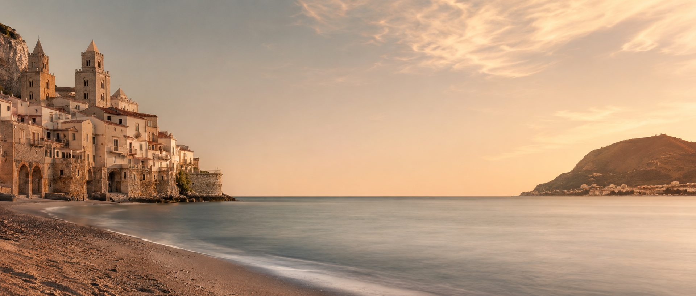
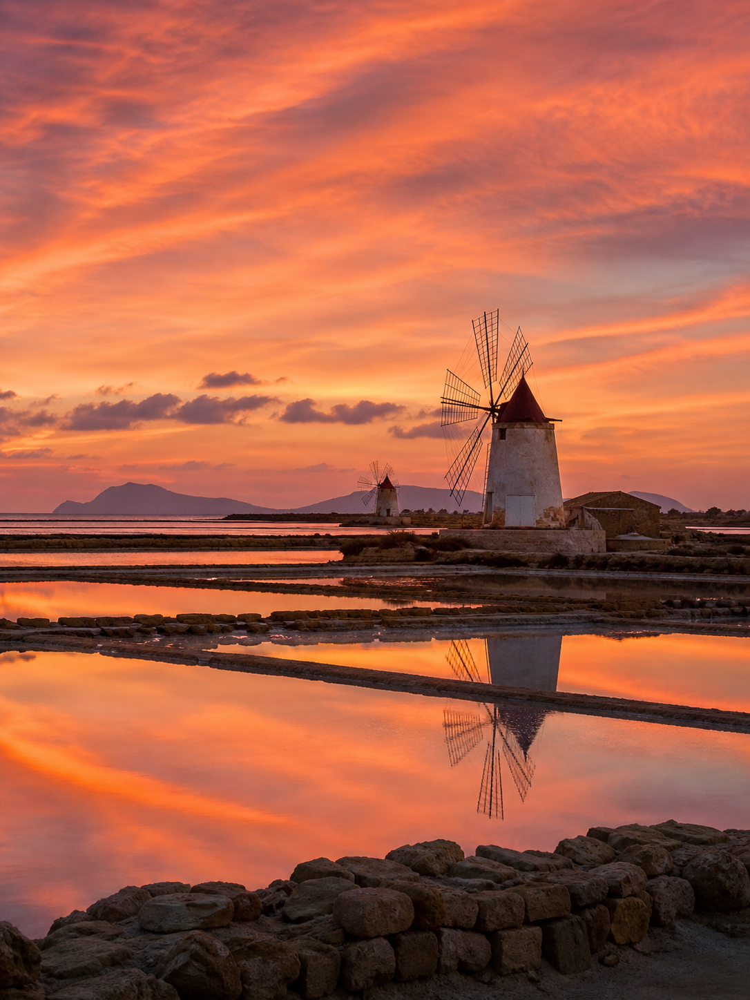
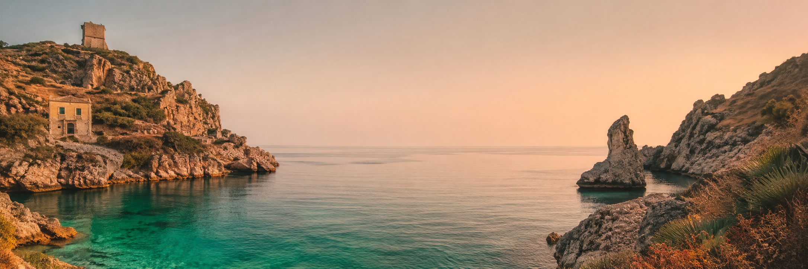
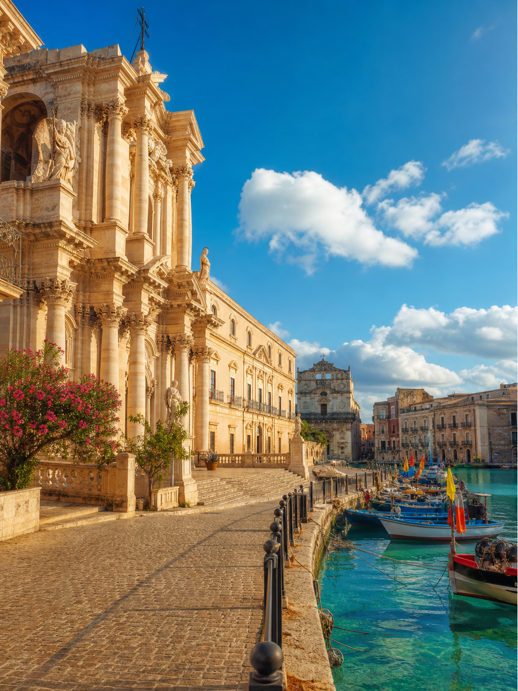
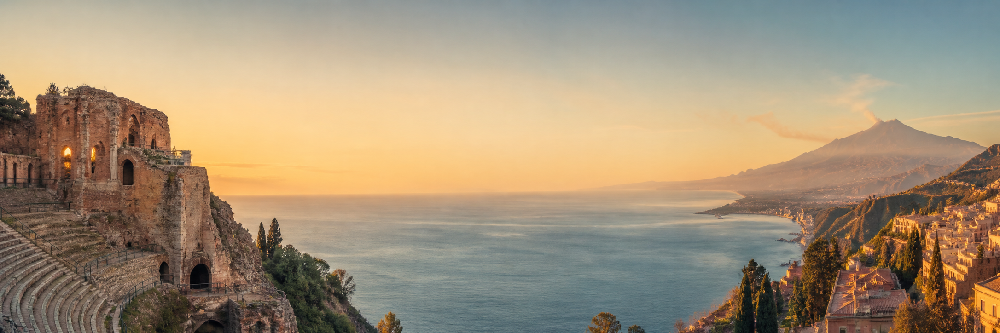

Agrigento
Valle dei Templi
Templi greci tra i meglio conservati al mondo, da vivere all'alba con i bambini.
Chiedici della Valle dei Templi
Scegli la zona sbagliata e rovini la vacanza.
Ti dico io quale fa per voi — gratis, su WhatsApp.
Trasparenza. Sicilia in Famiglia offre un orientamento gratuito. Se desideri procedere, prenotazione, contratto, pagamento e garanzie sono gestiti esclusivamente dal tour operator di riferimento per la destinazione scelta. Sicilia in Famiglia non incassa somme e non conclude contratti turistici.
Iniziamo da quiPDF gratuiti con occhi da famiglia. Orari reali, consigli pratici, cose che online non si trovano. Scorri e scarica quella che ti serve — subito, gratis.
6 guide gratuite disponibili — nessuna registrazione richiesta.
PDF gratuiti con occhi da famiglia. Orari reali, consigli pratici, cose che online non si trovano. Scorri e scarica quella che ti serve — subito, gratis.
6 guide gratuite disponibili — nessuna registrazione richiesta.
Spiaggia comoda, borgo a piedi, ritmo giusto per i bambini piccoli. La guida ti dice quando andare e dove stare.
PDF Gratis Scarica gratisTeatro antico, Isola Bella e orari che cambiano tutto con bambini al seguito. La guida ti evita le salite sbagliate.
PDF Gratis Scarica gratisA che quota andare, cosa preparare, quanto regge un bambino di 5 anni. Il vulcano si fa benissimo in famiglia — se sai come.
PDF Gratis Scarica gratisQuali isole scegliere, traghetti, logistica: tutto quello che nessuno dice quando ci si va con bambini piccoli.
PDF Gratis Scarica gratisIl parco UNESCO non è solo per adulti. La guida ti mostra come viverlo in famiglia senza stancare i bambini.
PDF Gratis Scarica gratisCalette, sentieri e acque incredibili. La guida per chi ci viene con bambini nel marsupio o in età da trekking.
PDF Gratis Scarica gratisScritte dopo esserci stati, con bambini al seguito. Non sponsorizzate da nessuno.
Anche tu vuoi un orientamento?Non pensavo ci fosse qualcuno disposto ad aiutarti gratis, senza venderti nulla. Invece è esattamente così. Ci ha aiutato a scegliere la zona giusta per i nostri bambini — cose che non trovi da nessuna parte online.
Un assaggio editoriale delle aree che le famiglie trovano piu interessanti. Scrivici per capire quale fa per voi.

Templi greci tra i meglio conservati al mondo, da vivere all'alba con i bambini.
Chiedici della Valle dei Templi
Il vulcano attivo più alto d'Europa. Si sale in famiglia — se sai a quale quota fermarti.
Chiedici dell'Etna
Spiaggia a due passi dal centro, nessuna macchina, ritmo perfetto per i piccoli.
Chiedici di CefalùStromboli, Lipari, Vulcano: quale isola scegliere cambia tutto con bambini.
Chiedici delle Eolie
Mercati, mosaici e street food. La città più araba d'Italia, raccontata ai bambini.
Chiedici di Palermo
Barocco siciliano senza folla. Carruggi e panorami che i bambini ricordano davvero.
Chiedici di Ragusa Ibla
Il mare più bianco della Sicilia. Spiaggia piatta, acque basse, ideale sotto i 6 anni.
Chiedici di San Vito
Isoletta barocca sul mare. Greci, romani e un mercato del pesce che vale il viaggio.
Chiedici di Ortigia
Teatro greco, Isola Bella e vista sull'Etna. Spettacolare — ma con i bambini va pianificata.
Chiedici di Taormina
Fenicotteri, mulini a vento e tramonto rosa. Un'ora che i bambini non dimenticano.
Chiedici delle SalineDestinazioni presentate a titolo puramente informativo e ispirazionale. Nessun prezzo o disponibilita e indicato.
Mi chiamo Gino. Ho lavorato nel turismo siciliano per oltre 10 anni, in strutture e zone diverse. Ho visto famiglie tornare a casa deluse — non perché la Sicilia le avesse deluse, ma perché avevano scelto il posto sbagliato per quello che cercavano. Sicilia in Famiglia nasce da lì.
Non vendo nulla. Ti ascolto, ti oriento e, se vuoi andare avanti, ti metto in contatto con il tour operator più adatto per la tua destinazione. Il servizio è completamente gratuito.
Indicazioni utili per orientarti tra diverse tipologie di soggiorno. Se vorrai andare avanti, ti metteremo in contatto con il tour operator piu adatto per la destinazione che scegli.
Servizio completamente gratuito. Non chiediamo dati sensibili e non gestiamo pagamenti. Il nostro ruolo e esclusivamente di orientamento iniziale.
Quanti siete, le eta dei bambini, quando partireste, cosa vi piace fare. Ascoltiamo con attenzione.
Solo WhatsApp — nessun modulo, nessuna email.
Un primo orientamento su aree e tipologie di soggiorno in linea con le tue esigenze, senza intermediazione commerciale.
Di solito rispondiamo entro poche ore.
Formalizzazione, contratto, pagamento e garanzie gestiti esclusivamente dal tour operator di riferimento per la destinazione scelta.
Nessun impegno — puoi fermarti in qualsiasi momento.
Non esistono soluzioni uguali per tutti. Raccontaci chi siete e ti aiutiamo a capire da dove cominciare - gratuitamente, senza fretta e senza impegni.
Scrivici senza impegno"La guida è abbastanza esaustiva. Grazie!"
"Non pensavo ci fosse qualcuno disposto ad aiutarti gratis, senza venderti nulla. Invece è esattamente così. Ci ha aiutato a scegliere la zona giusta per i nostri bambini."
"Avevo mille dubbi sulle Eolie con un bambino di 2 anni. Gino mi ha spiegato quali isole evitare e perché — cose che non trovi da nessuna parte online."
Hai già usato il servizio? Scrivici — il tuo feedback ci aiuta a migliorare.
Quello che le famiglie ci chiedono più spesso — sulla Sicilia e su come funzioniamo.
Scrivici su WhatsApp per un orientamento iniziale gratuito. Nessun impegno, nessun costo, nessuna fretta.
Scrivici su WhatsAppServizio gratuito e senza impegno. Prenotazioni e contratti a cura del tour operator di riferimento.